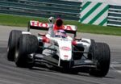

De: La Frikipedia, la enciclopedia extremadamente seria.
De: La Frikipedia, la enciclopedia extremadamente seria. De: La Frikipedia, la enciclopedia extremadamente seria.
| De la serie la IndyCar mola: | |||
| Takuma Sato | |||
| |||
| Nacionalidad: | | ||
| Coche nº: | 14 | ||
| Compite en el equipo: | AJ Foyt Racing | ||
| Nº de cacharrazos provocados: | Unos cuantos, pero no han sido su culpa | ||
| Nº de coches aniquilados: | Unos cuantos, sin intención | ||
| Nº de muertes que se le atribuyen: | No | ||
| ¿Compite ahora mismo? | Claro que sí, es Super Sato | ||
| Victorias en la categoría | Una victoria, 4 poles y 4 podios | ||
| Campeonatos ganados: | No, por ahora | ||
«Qué crack. Sólo podía ser japonés»
~ Yo sobre Takuma Sato
«Takuma Sato es un piloto con fuego en su interior»
~ John Surtees sobre Takuma Sato
«Mi obsesión es siempre adelantar al piloto que llevo delante. Así he corrido siempre y lo seguiré haciendo»
~ Takuma Sato explicando su filosofía
«Quedé muy impresionado por la actuación de Takuma Sato en Kansas. No puedo entender cómo alguien que nunca ha estado en un óvalo lo pudo hacer tan bien. Fue una lástima que abandonara. ¿Cuán sólido es el asiento de Sato? Tienes que amar ese coche!»
~ Un aficionado americano sobre Takuma Sato [4]
«Simplemente... Sato»
~ Yo al ver a Sato abandonando en una carrera.
«Es Dios»
~ Los japoneses sobre Takuma Sato
«Es Dios»
~ Tú sobre Takuma Sato cuando acabes de leer esta página
Takuma Sato (佐藤琢磨) es un piloto de 2010, Sato participa en la IndyCar para seguir asombrando a la gente con su talento.
Sato nació en 1977 en una familia humilde, la familia Sato, con su padre Sete (un conocido piloto de motos), su madre Seti (una faraona conocida) y su hermano Seta (conocido en el bosque y por salir en Mario Bros). Tras nacer sus padres le regalaron un cochecito de Nikon con el que jugaba y aprendía poco a poco, qué buen zagal.
Sato demostró sus virtudes al volante cuando tenía siete meses. Entonces, se subió al coche de su padre, salió (cargándose la puerta) del garaje y provocó el caos en su ciudad natal, matando aproximadamente 659 hombres, 587 mujeres, 863 pokémon, reventando el motor y la rueda de respuesto del maletero. Su aventura acabó empotrándose en el Palacio Imperial de Tokio. Por supuesto, al ser menor de edad y tras realizar semejante exhibición de maestría al volante, se libró de toda pena. Takuma se enganchó a la Fórmula 1 en 1987, a la edad de diez años, tras ver como Satoru Nakajima quedaba sexto en una carrera en el Circuito de Suzuka con Lotus, y donde Ayrton Senna acabó segundo también con un Lotus. En aquel momento, Sato ya había decidido que se metería en el automovilismo para tratar de emularles.
Poco después, y en vista del gran futuro que tenía por delante, sus padres aceptaron que Takuma se fuera a Inglaterra con veinte años, para que se integrara en el automovilismo europeo y se convirtiera en piloto de Fórmula Junior; y luego, de Fórmula 3. En esta categoría, el bueno de Sato arrasó, tanto en las carreras como a los demás pilotos (a los que incluso echaba de la pista).
Takuma Sato era demasiado bueno para quedarse en la F3 y después de ganar claramente esta competición (obtuvo un récord aún no superado de 16 victorias) dio el salto a la máxima categoría en el año 2002 con Jordan, equipo que ya lo quiso en 2001 (pero Sato optó por ser probador en BAR y seguir compitiendo en la F3), gracias a las limosnas de Honda, que le daba los motores a Eddie. Pese a ser su año de debut y contar con un monoplaza lento como él solo poco competitivo y aún menos fiable, Taku dejó una imagen digna de esta insignificante decadente escudería en más de una carrera, como la de Japón (en la que Takuma acabó en un genial quinto puesto [5]). Hubiera podido puntuar en su carrera de debut, pero una avería se lo impidió. Además, en el GP de Brasil, Takuma fue el primero en ver la bandera a cuadros, por lo que era el vencedor de la carrera. Sin embargo, la (MA)FIA intervino para evitar tal injusticia (para ellos, claro) y le otorgó la victoria a Michael Schumacher inventándose que Sato estaba doblado [6].
Después de avisar a los más incrédulos, Sato explotó verdaderamente en BAR Honda: Después de pasarse casi todo el 2003 mejorando el motor Honda, Sato sustituyó a Jaime Villanueva en la última carrera de 2003 y se aseguró un volante para la siguiente temporada con su 6º puesto. Takuma hizo magníficas carreras y logró varios puntos para esta perdedora modesta escudería pese a sufrir varios golpes de mala suerte [7] y tener un coche diseñado según las preferencias y estilo de conducción de Jenson Button. BAR consiguió el subcampeonato de constructores de 2004 y Sato el octavo puesto del de pilotos con 34 puntos y otros logros tales como un podio en Indianápolis [8] [9], clasificarse segundo y liderar el GP de Alemania, etc. No logró por más podios por errores estratégicos [10] o por roturas de motor. Luego, Takuma tuvo un mal 2005, en el que sufrió incontables putadas como sanciones, errores del equipo, averías, etc. que acabaron por condenarle y fichar al Barrilete, que venía por "recomendación" de Ferrari.
Entonces, los mamonazos responsables de Honda relegaron a Sato al paupérrimo modestísimo y recién creado Super Aguri para 2006, donde hizo historia (logró los únicos puntos de la historia de esta escudería) y rompió todos los pronósticos pese a que conducía un coche como el de los Picapiedra. De manera incomprensible, Takuma se quedó sin equipo después de la desaparición de Super Yoguri en 2008 [11].
En la pretemporada de 2009, Sato estuvo en la órbita de Toro Rosso, que no dejó de elogiarle [12] [13] y le tuvo a prueba [14], pero posteriormente comprobamos que sólo querían que se subiera al coche para que se ilusionara y le cediera "amablemente" sus reglajes al novato enchufado e inútil de Sébastien Buemi. Después de un año en el dique seco, se repitió la historia con los malayos de Lotus, que prefirieron a Heikki Kovalainen; y con Penault y el forrao de Vitaly Petrov [15]. Por ello, Taku optó por pasarse a la IndyCar. Un dato curioso es que Lotus decidió patrocinar a Sato porque los muy mamones se dieron cuenta que era la única manera de ganar algo en esa competición americana [16].
En sus mejores tiempos, Sato destacó por acojonar hasta a los mejores pilotos con sus atrevidas maniobras de dibujos animados. Tuvo 'piques' con pilotos como el protagonizado con Maikel Chumájer (al que golpeó por detrás obligándole a abandonar en Spa) o el que tuvo con Kimi Räikköñen, a quien adelantó a unos 830 km/h haciendo la salida del milenio en el GP de Mónaco 2004 dejándole con tres palmos de narices.
Cuando hayas leído esta sección, te convencerás de lo Dios que es Takuma Sato. También te harás la pregunta "¿Hacia dónde miraban aquel día los dirigentes de Honda y Toro Rosso?". En fin, lee y flipa.
| Afoto destacada del GP | Carrera | Estos fueron los hechos | ¿Dónde estaban ese día los dirigentes de Honda/Toro Rosso? |
|---|---|---|---|
| GP de Japón 2002 |
Por aquel entonces, Takuma corría en el |
El equipo BAR, después de estar rezando un rosario a San Ganchao, se dio cuenta de su talento y nada más acabar la carrera le fichó para el próximo año. Los de Toro Rosso (por aquel entonces, Min-arde) ya se habían ido del circuito después de hacer, una vez más, el ridículo. | |
|  | GP de Estados Unidos 2004 |
Sato salía desde el tercer puesto, pero perdió una posición con ho%*&$ por el óvalo conduciendo... con una mano (y dos cojones). Finalmente, acabó subiendo podio de Indianápolis, sólo por detrás de los imbatibles Fewarri de El Chumi y Rubén Barrilete. Vídeo | Los de BAR, flipando, pero luego despidieron a la mayoría cuando los hippies la compraron. Toro Cojo era entonces ChuMinardi, y estaban demasiado ocupados viendo como Zsolt Baumgartner conseguía un punto |
| GP de Brasil 2006 |
Seguramente no se le vio mucho en pantalla, pero Sato hizo un carrerón el día en que Forrando Palfondo ganaba su segundo mundial y Miguel Zapatero se retiraba. Saliendo en antepenúltima posición y con el peor coche de la parrilla de largo, Takuma acabó en una meritoria décima posición (puesto que hoy en día da puntos), con sólo una vuelta perdida y superando a los dos Toritos Rojos, a los m*%%@land/m*%%@aiker, a un Red Mul y a su compañero Sakamoto. | Los de Honda (pobres ilusos que no sabían lo que les esperaba) aún estaban felices, disfrutando de las rentas que dejó Super Sato en el coche, lo que les permitió conseguir un podio en aquella carrera. Por parte de Toro Rojo, acabando su primer año con un punto, se dieron por satisfechos y no le dieron importancia al milagro de Sato. | |
| GP de España 2007 |
Tras un buen papel en la clasificatoria, Sato salía el 13º después de que un problema con la bomba de gasolina le dejara tirado al final de la Q2. Tras la salida, Takuma siguió en el mismo puesto que tenía en la parrilla. A partir de ahí, viendo la posibilidad de puntuar, Sato le echó cojones para ponerse por delante de los |
Los de Honda, seguramente, cagándose en El Botón y Barrilete después de su | |
| GP de Canadá 2007 |
Otro GP mágico fue el de Canadá 2007. Cuentan los entendidos como Francesc Rosés que, aquel fin de semana, Takuma se propuso echarle huevos para asombrar al mundo con su modestísimo equipo, Super Yoguri. Sato salía 11º y ya en la salida consiguió ganar una posición, y poco después se puso noveno. A media carrera consiguió pasar a a Kimi Räikköjonen (que conducía un Fewarri). Después, en un período de Safety Car, una cagada de los mecánicos en su segunda parada en boxes le hizo perder unos cuantos puestos. Taku volvió a la pista octavo a falta de pocas vueltas para el final. Sin embargo, Sato no se rinde nunca, y por eso adelantó a Ralfredo y Frenando Alonso (¡Con un McLaten!) para acabar en sexto lugar con su |
Fumándose un porro juntos, después de la |

Cuando el mismo Sapo Sato ya pensaba que jamás nadie podría alcanzarle, le surgió un importantísimo rival. Se trataba de el Inombrable (porque no me acuerdo) Yuji Ide. Este matao piloto con increíbles habilides de liante rivalizó con Sapo Sato, y algunos dicen que venció, aunque por poco tiempo, ya que Ide despareció, nadie sabe por qué ni cómo. ¿Quizás por no terminar ni una carrera de las que disputó? ¿por quedar último en todas las clasificaciones? Nadie lo sabe del cierto. Posteriormente aparecería otro enemigo para Taku: el feo enchufao Sébastien Buemi. Pese a la clara victoria de Sato durante los tests, al final Buemi logró hacerse con el volante en Toro Rosso. Sin embargo, el que ha ganado realmente es Takuma, puesto que Sébastien demuestra en cada carrera que su fichaje fue un error garrafal.
Sato se pasó a las 2010, fichando por un equipo que no conoce ni su madre llamado KV Racing Technology. Dicho equipo no se comía un rosco hasta que llegó Takuma, gracias al cual han mejorado hasta el punto de lograr dos pole positions.
Para 2012, Takuma pasa a competir con un equipo de tres al cuarto que volvía a la categoría, Rahal Letterman Lanigan Racing, porque Barrilete lo fue a sustituir (otra vez). Consigue su primer podio (un 3º puesto) en la categoría en Sao Paulo, después de salir 25º y sacarse de la manga este doble adelantamiento a pocas vueltas del final. Posteriormente vuelve a subirse al cajón tras ser 2º en Edmonton. Hubiera ganado las 500 millas de Indianápolis, pero se estrelló en la última vuelta intentando adelantar al que iba primero. Al terminar el año, contrae matrimonio con Danica Patrick.
En 2013, ficha por AJ Foyt Racing y consigue su primera victoria en Long Beach, la tercera carrera del año, y un 2º puesto en Sao Paulo. Pese a una temporada algo irregular, consigue ser renovado un año más.

Durante la presentación del coche de Fórmula E en la celebración del Salón del Automóvil de Tokio, Sato confirma que estará en condición de piloto desarrollador del monoplaza en 2014 para pasar el rato junto a di Grassi, mientras corre en la Indycar.
Además, Sato estuvo en el estreno oficial de la Fórmula E: Beijing eGrand Prix, con el equipo más ganador de todos los tiempos (lo habréis flipado, no?): Almin Aguri. Pese a sufrir una avería tras 11 vueltas, pudo volver a pista y pasó a la historia como el autor de la primera vuelta rápida de la competición.
| Héroes |
|---|
| Action Man • Afilador • Angus Young • Arnold Schwarzenegger • Astérix el Galo • Austin Powers • Black Rock Shooter • Bruce Lee • Che Copete • Chino Cudeiro • Chuck Norris • Dimitri • Don Ramón • El Héroe Mediatis • El Quijote • Escrotoncio • Goku • Gregory House • Indiana Jones • Jack Bauer • Jackie Chan • James Bond • Jesús de Nazaret • Jimi Hendrix • Luigi • MacGyver • Michael Moore • Mortadelo y Filemón • Mr. Proper • Rambo • Rémi Gaillard • Rocky • El Cid • San Ganchao • Takuma Sato • The Boogeyman • Tony Melendez • Txumari Alfaro • Vin Diesel |
| |
| B-ウサギ · 銀 · 我妻 由乃 · 青野 月音 · ルルーシュ・ランペルージ · 緋村 剣心 · 糸色 望 · Александр "Саша" Николаевич Хэлл · サトシ · 中嶋 悟 · 佐藤琢磨 |
Autor(es):


![[5]](http://www.takumasato.com/images/Gallery/original/Gallery_Qe083VNw612L8WYLPydFUK9y_0.png){kind=link}
![[7]](http://img688.imageshack.us/i/satohumareda.jpg/){kind=link}
![[8]](http://www.formula1.com/wi/597x478/tvimages/2004/unitedstates/sunpic11.jpg){kind=link}
![[9]](http://img138.imageshack.us/i/satopodio.jpg/){kind=link}
![[11]](http://www.as.com/recorte/20090419dasdaimot_3/XLCO/Ies/Sato_candidato_sustituir_Piquet.jpg){kind=link}
![[17]](http://www.takumasato.com/images/Gallery/original/Gallery_Kutfnwsu5EKz8zJNFjZLdvUZ_0.png){kind=link}
{kind=link}
{kind=link}
{kind=link}
![[21]](http://content.mag.gpweek.com/djvu/Australian%20Motorsport%20News/GP%20Week/10-Nov-2009/webimages/page0000036_large.png){kind=link}
![[23]](http://img692.imageshack.us/i/satoentrevista.jpg/){kind=link}
![[2]](http://www.takumasato.com/images/Gallery/original/Gallery_Iwy9Kv4Q85TI18VH6FxrdGfN_0.png){kind=link}
![[27]](http://www.formula1.com/wi/597x478/sutton/2010/d10jpn1460.jpg){kind=link}
![[28]](http://www.formula1.com/wi/597x478/sutton/2010/d10jpn203.jpg){kind=link}
![[3]](http://geartinggi.com/wp-content/uploads/2010/03/1002555.jpg){kind=link}
{kind=link}
{kind=link}
{kind=link}
{kind=link}
{kind=link}
{kind=link}
{kind=link}
{kind=link}
{kind=link}
{kind=link}
{kind=link}
{kind=link}